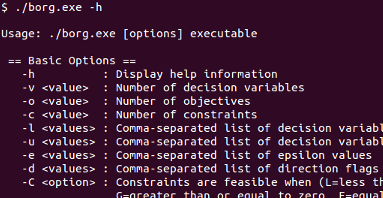
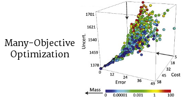
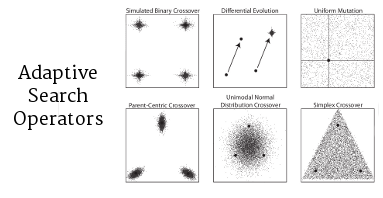
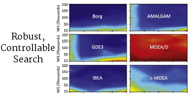
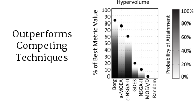

Welcome.
The Borg Multiobjective Evolutionary Algorithm (MOEA) is a state-of-the-art optimization
algorithm developed by David Hadka and Patrick Reed at the Pennsylvania State University. Borg is freely
available for academic and non-commercial use. Use this site to learn more about the Borg MOEA and request
access to its source code.





Easy-to-use command line interface
Many-Objective
Borg efficiently captures the tradeoffs between many conflicting performance objectives,
providing decision makers with detailed insight into their problem characteristics.
Adaptive Search
Borg uses an ensemble of search operators, auto-adapting their use at runtime to tailor itself to your optimization
problem.
High-Performance
Written in efficient, high-performance ANSI C, the Borg MOEA wastes little time when
solving your problem. Runs on Unix, Linux, Windows, and Mac.
Back to Top
Publications.
- Reed, P. M. and D. Hadka. Evolving Many-Objective Water Management to Exploit Exascale Computing. Water Resources Research, 50(10):8367-8373, 2014. View Details
- Hadka, D. and P. Reed. Large-scale Parallelization of the Borg Multiobjective Evolutionary Algorithm to Enhance the Management of Complex Environmental Systems. Accepted to Environmental Modelling & Software, 2014. View Details
- Giuliani, M. Agent-Based Water Resources Management in Complex Decision-Making Contexts. Doctoral Dissertation, Politecnico di Milano, 2013. Download PDF
- d’Ervau, E. L. Optimizing Early-Warning Monitoring Systems for Improved Drinking Water Resource Protection. Master's Thesis, Universität Stuttgart, 8 October 2013. Download PDF
- Woodruff, M. et al. Many-Objective Visual Analytics: Rethinking the Design of Complex Engineered Systems. Structural and Multidisciplinary Optimization, 48:201-219, 2013. View Details
- Hadka, D., et al. Scalability Analysis of the Asynchronous Master-Slave Borg Multiobjective Evolutionary Algorithm The 16th International Workshop on Nature Inspired Distributed Computing (NIDISC) at the 27th IEEE/ACM International Parallel and Distributed Processing Symposium (IPDPS), Boston, MA, 20 May 2013. View Details
- Woodruff, M. et al. Auto-Adaptive Search Capabilities of the New Borg MOEA: A Detailed Comparison on Product Family Design Problems. 12th AIAA Aviation Technology, Integration, and Operations (ATIO) Conference and 14th AIAA/ISSMO Multidisciplinary Analysis and Optimization Conference, Indianapolis, Indiana, 17 September 2012. View Details
- Hadka, D. et al. Diagnostic Assessment of the Borg MOEA on Many-Objective Product Family Design Problems. WCCI 2012 World Congress on Computational Intelligence, Congress on Evolutionary Computation, Brisbane, Australia, 10-15 June 2012, pp. 986-995. View Details
- Reed, P., et al. Evolutionary Multiobjective Optimization in Water Resources: The Past, Present, and Future. (Editor Invited Submission to the 35th Anniversary Special Issue), Advances in Water Resources, 51:438-456, 2013. View Details
- Hadka, D. and P. Reed. Diagnostic Assessment of Search Controls and Failure Modes in Many-Objective Evolutionary Optimization. Evolutionary Computation, 20(3):423-452, 2012. View Details
- Hadka, D. and P. Reed. Borg: An Auto-Adaptive Many-Objective Evolutionary Computing Framework. Evolutionary Computation, 21(2):231-259, 2013. View Details
Back to Top